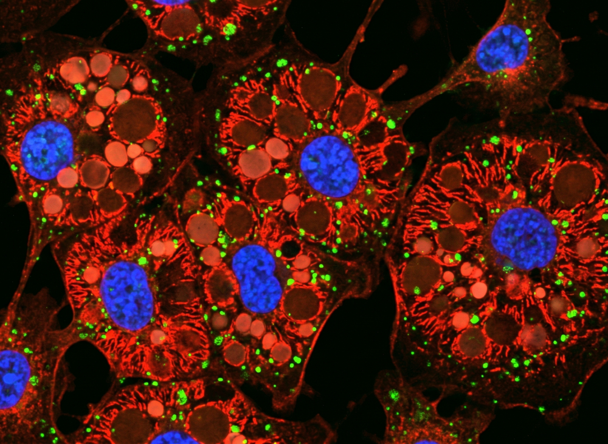
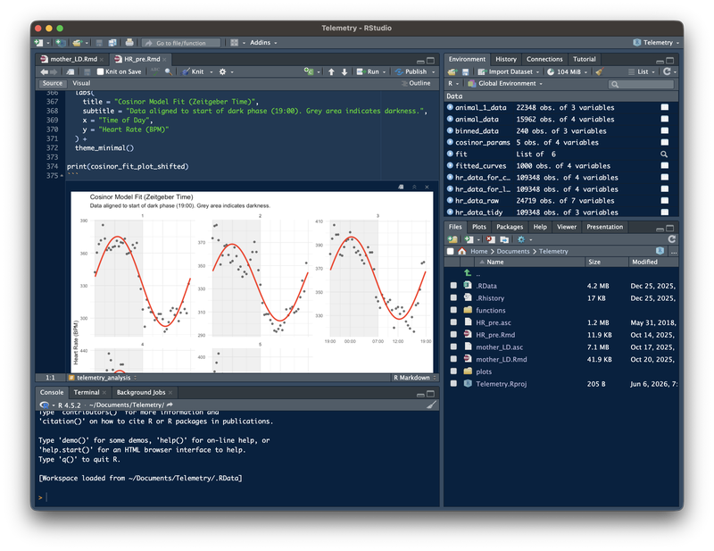
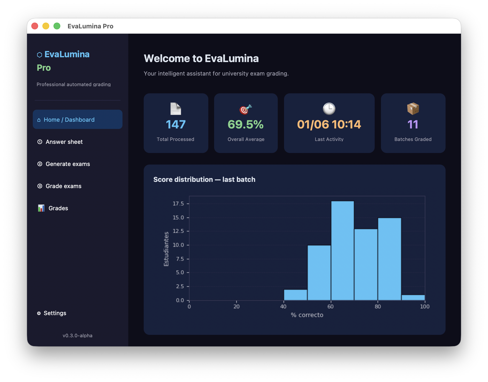

EvaLumina
Multiplatform automated evaluation system with Optical Mark Recognition (OMR) and encrypted answer keys (developed in Python).
Python
OpenCV
EdTech
I'm a clinician-scientist working at the intersection of chronobiology, metabolic physiology, and systemic health. For over a decade I've studied how circadian disruption during pregnancy (chronodisruption) programs metabolic and cardiovascular disease in the offspring (and how maternal melatonin can reverse it). This work has been published in journals such as the Journal of Physiology, Journal of Pineal Research, and Frontiers in Endocrinology.
Trained as a dentist and now Head of the Department of Dentistry, I connect oral and systemic health through the perio-systemic axis, the biological link between periodontal disease, obesity, and adipose-tissue inflammation.
In parallel, I build and deploy the software that supports this work, from automated assessment tools and reproducible-research platforms to the Linux infrastructure that runs them, bringing engineering rigor to academic and clinical workflows.


Leadership in translational and epidemiological research. Design of clinical trials, observational studies, and systematic reviews (Cochrane certified).
End-to-end quantitative analysis, from exploratory data analysis to complex multivariate and nonlinear modeling (logistic regression, cosinor and sinusoidal models for circadian rhythms). Reproducible, fully scripted workflows in R (tidyverse) and Python, with RMarkdown and LaTeX.
Solid experience in chronobiology, metabolic physiology, and fetal programming studies.
Advanced proficiency in cell culture and experimental surgery techniques (in vivo models in humans and rodents).
These methods underpin a sustained record of peer-reviewed work (see Publications).

Multiplatform automated evaluation system with Optical Mark Recognition (OMR) and encrypted answer keys (developed in Python).
Active-learning platform for Clinical Epidemiology. Computes a deterministic vocational profile and streams AI-generated feedback (Gemini/Claude), built as an open, reproducible educational-research study with informed consent.
MVP for the comprehensive management of the clinical sterilization center, autonomously deployed on local headless Linux infrastructure.
Sleep Science Prize, Best Presentation. XV Latin American Symposium on Chronobiology (Brazilian Sleep Society, 2019).
Review Editor, Frontiers in Oral Health. Grant and scholarship evaluator for ANID (Medical Sciences panel). Reviewer for BMC Oral Health, Frontiers in Endocrinology, and BMJ Case Reports.
Head of the Department of Dentistry (Instituto de Odontoestomatología). CNA accreditation self-assessment committee. Former Director, Medical Research Honors Program.
Supervised 12+ undergraduate, master's, and MBA theses across Dentistry, Medicine, and Science.
Frequent invited speaker at national and international scientific meetings.